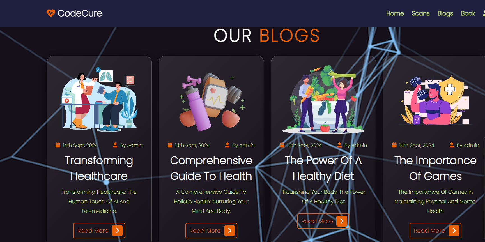
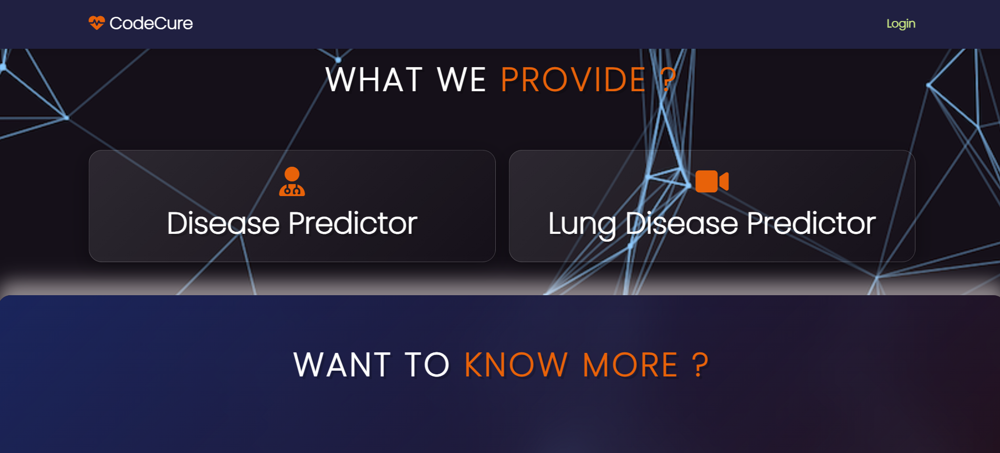

CodeCure: A Design Thinking Journey
Empathize
To start with, the development of CodeCure was grounded in empathy. The team engaged with patients, doctors,
and healthcare professionals to understand their pain points and needs. Through interviews, surveys, and
direct interactions, we identified key issues: difficulty in booking appointments, managing medical records,
and predicting diseases based on symptoms. This stage was crucial in gaining deep insights into the
challenges faced by both patients and doctors.
Define
Armed with insights from the empathy stage, we clearly defined the core problems:
- Patients struggle to book appointments efficiently and manage their healthcare needs.
- Doctors need a streamlined way to manage their appointments and patient information.
- There is a need for a system that can predict diseases based on symptoms to aid early diagnosis and
treatment.
- There is a lack of accessible, reliable information on health-related topics for patients.
Ideate
The ideation phase involved brainstorming sessions where we generated a plethora of ideas to address the
defined problems. We encouraged creative thinking and came up with several potential features, such as:
- A user-friendly registration process for both patients and doctors.
- An intuitive appointment booking system.
- Integration of a machine learning model to predict diseases based on symptoms.
- A blog section to provide valuable health-related information.
- Features to track appointments and update profiles.
Prototype
Next, we moved into the prototyping phase, where we developed a tangible version of the CodeCure application:
- User Registration: A simple yet secure registration system for patients and doctors.
- Login and Logout: Secure user sessions to ensure personalized and safe access.
- Appointment Booking: A streamlined interface for booking and managing appointments.
- Disease Prediction: Implemented a machine learning model using a Decision Tree Classifier to
predict diseases based on symptoms.
- Blog Section: A platform for blog posts covering various health topics, such as Transforming
Healthcare and Holistic Health.
Test
The final stage involved rigorous testing of the prototype with real users:
- User Feedback: Collected feedback from patients and doctors on the usability and functionality of
the system.
- Iterative Improvements: Based on feedback, we refined the features, improved the user interface,
and ensured the system was robust and reliable.
- Final Deployment: After thorough testing and refinements, the application was ready for
deployment.
Project Structure
- app.py: The main Flask application file containing routes and functionality.
- templates: HTML templates for rendering web pages.
- static: Static files such as CSS, images, and data.
- database.db: SQLite database file storing user and appointment information.
- Data: CSV files for training and testing the disease prediction model.
Installation and Running
Dependencies
- Flask
- Flask-SQLAlchemy
- Plotly
- NumPy
- TensorFlow
- Scikit-Learn
Images
 
Conclusion
The journey of developing CodeCure through design thinking ensured that we remained user-centric,
addressing real needs with innovative solutions. This approach allowed us to create a comprehensive
healthcare platform that not only meets current needs but is also adaptable for future enhancements.
By following the design thinking process, CodeCure exemplifies how empathetic, creative, and iterative
problem-solving can lead to meaningful and impactful innovations in healthcare technology. If you have
any more questions or need further details, feel free to ask!